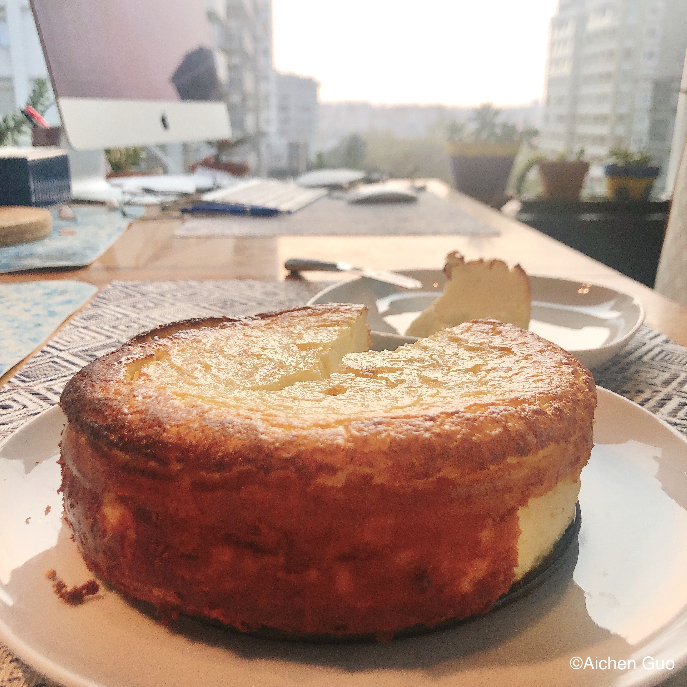

Basque Cheesecake
Ingredients
| For 6-inch cake mold |
|---|
| Cream Cheese |
300g |
| Whole Egg |
150g |
| Yolk |
10g |
| Heavy whipping cream |
170g |
| Sugar |
80g |
| Corn Starch |
4g |
| Cake flour |
8g |
| Lemonade |
a few drops |

Steps
- Put cream cheese and sugar into a container. Use spatula to mix them together.
- Pour in egg liquid that was mixed well. Use electric whisk to mix well.
- Add in heavy whipping cream and a few drops of lemonade. Use electric whisk to mix them.
- Sieve cake flour and corn starch into the container. Use hand whisk to mix them together.
- Preheat the oven to 430℉.
- Put a sheet of oilpaper inside the baking mold and pour the mix into the baking mold.
- Put the mold on the middle layer of the oven to bake for about 20~23 minutes until the surface has a burnt sugar coloring.
- Once the baking process is done, take the mold out from the oven and let the cheesecake cool down.
- After cooling down, put the cheesecake inside the refrigerator for 5 hours to maximize its taste. Enjoy!